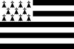
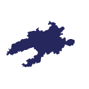
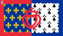
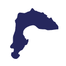

Les îles Chausey sont un archipel normand, rattaché à la France,
situé au nord de la baie du Mont-Saint-Michel. La Grande Île,
la seule île habitée, se situe à 15,8 km au large de la commune
portuaire de Granville.
Île de Bréhat

Bretagne
Caractéristiques
Nb habitants
Longueur
Largeur
Superficie
377
3,5 km
1,5 km
138 ha
Description
Archipel de la Manche
Île-de-Bréhat est une commune française située dans le département
des Côtes-d'Armor au nord de la pointe de l'Arcouest en Bretagne.
Elle est constituée de l'archipel de Bréhat à l'exclusion de l'île
Maudez. Elle doit son nom à l'île principale, dénommée Bréhat,
dont le nom breton est Enez Vriad. L'Île-de-Bréhat appartient au
pays historique du Goëlo et la commune est rattachée au canton de
Paimpol. Sa forte fréquentation saisonnière fait l'objet d'une
réflexion sur son accès, limité à 4 700 visiteurs quotidiens du
14 juillet au 25 août.
Île de Batz
Bretagne
Caractéristiques
Nb habitants
Longueur
Largeur
Superficie
450
3,5 km
1,5 km
320 ha
Description
Île de la Manche
L'Île-de-Batz est une commune française qui administre, depuis
1789, la totalité du territoire de l'île dénommée île de Batz,
anciennement isle ou île de Bas. Ces deux entités, la commune et
l'île, sont situées à proximité de Roscoff et sont reliées à cette
commune par un service public de transport par bateau.
Île d'Ouessant

Bretagne
Caractéristiques
Nb habitants
Longueur
Largeur
Superficie
832
8 km
4 km
1 558 ha
Description
Île de la mer d'Iroise
L'île d'Ouessant est une commune insulaire française du département
du Finistère et de la région Bretagne, constituée pour l'essentiel
par l'île d'Ouessant dans l'océan Atlantique. Le bourg principal
s'appelle Lampaul. Ses habitants sont appelés les Ouessantins et
Ouessantines. Ouessant fait partie du parc naturel régional
d'Armorique et du parc naturel marin d'Iroise.
Île de Molène
Bretagne
Caractéristiques
Nb habitants
Longueur
Largeur
Superficie
162
1,2 km
0,8 km
72 ha
Description
Île de la mer d'Iroise
L'île de Molène est une commune située au large de la côte ouest
du Finistère, en Bretagne. La plupart des autres îles de l'archipel
de Molène appartiennent à la commune du Conquet sur le continent.
Île de Sein
Bretagne
Caractéristiques
Nb habitants
Longueur
Largeur
Superficie
242
1,8 km
0,8 km
56 ha
Description
Île de la mer d'Iroise
L'île de Sein est une île de Bretagne située dans le sud-est de
la mer d'Iroise, à 7,20 kilomètres à l'ouest de la pointe du Raz,
dont elle est séparée par le raz de Sein.
Archipel des Glénan
Bretagne
Caractéristiques
Nb habitants
Longueur
Largeur
Superficie
Quelques-uns
0,7 km
0,3 km
14 ha
Description
Archipel de l'océan Atlantique
L'archipel des Glénan, sans « s », ou îles des Glénan, localement
appelé « les Glénan », est un archipel breton du golfe de Gascogne,
situé au sud de Fouesnant, dans le Finistère. À noter que la célèbre
école de voile « Les Glénans », avec un « s », possède une base
nautique sur l'archipel.
Île de Groix
Bretagne
Caractéristiques
Nb habitants
Longueur
Largeur
Superficie
2 256
8 km
4 km
1 770 ha
Description
Île de l'océan Atlantique
Groix est une île et une commune française du département du
Morbihan en région Bretagne. Surnommée l'île aux grenats, elle se
trouve dans le golfe de Gascogne, au large de la côte sud de la
Bretagne. L'île de Groix est une réserve minéralogique connue
notamment pour ses schistes bleus composés de glaucophanes et
de grenats.
Belle-Île-en-Mer
Bretagne
Caractéristiques
Nb habitants
Longueur
Largeur
Superficie
5 528
17 km
9 km
8 400 ha
Description
Île de l'océan Atlantique
Belle-Île-en-Mer, appelée plus couramment Belle-Île, est une île
française rocheuse située dans le golfe de Gascogne, au sud de la
Bretagne dans le département du Morbihan, à 12,3 km au sud de
Quiberon. C'est la troisième plus grande île des côtes de la France
métropolitaine après la Corse et Oléron.
Île d'Houat
Bretagne
Caractéristiques
Nb habitants
Longueur
Largeur
Superficie
216
3 km
1,5 km
288 ha
Description
Île de l'océan Atlantique
Houat est une île française située dans l'océan Atlantique,
au sud de la région Bretagne dans le département du Morbihan.
Elle est située à 10 km au sud-est de la pointe du Conguel,
sur la presqu'île de Quiberon.
Île de Hœdic
Bretagne
Caractéristiques
Nb habitants
Longueur
Largeur
Superficie
97
2,5 km
1 km
209 ha
Description
Île de l'océan Atlantique
Hœdic est une île française granitique située dans l'océan
Atlantique, au sud de la Bretagne dans le département du Morbihan,
à 13 km à l'est de Belle-Île et à 5 km au sud-est de l'île de Houat.
Île aux Moines
Bretagne
Caractéristiques
Nb habitants
Longueur
Largeur
Superficie
627
7 km
3,5 km
320 ha
Description
Île du golfe du Morbihan
L'Île-aux-Moines est une commune française située dans le
département du Morbihan en région Bretagne. Située dans le golfe
du Morbihan, elle est constituée de l'île aux Moines, la plus grande
île du golfe, de l'île de Creïzic, de l'île d'Holavre et des deux
îles de Brouël.
Île d'Arz
Bretagne
Caractéristiques
Nb habitants
Longueur
Largeur
Superficie
257
3 km
3 km
330 ha
Description
Île du golfe du Morbihan
Île-d'Arz est une commune française située dans le département
du Morbihan, en région Bretagne. Elle recouvre huit îles dont la
principale est l'île d'Arz, dans le golfe du Morbihan au large
de Vannes.
Île d'Yeu
Pays de la Loire
Caractéristiques
Nb habitants
Longueur
Largeur
Superficie
4 870
10 km
4 km
2 300 ha
Description
Île de l'océan Atlantique
L'île d'Yeu est une île française du golfe de Gascogne formant
la commune de L'Île-d'Yeu, dans le département de la Vendée et
en région Pays de la Loire. Avec l'île de Noirmoutier, elle
constitue l'une des deux seules îles de l'ancienne province
du Poitou.
Île d'Aix


Pays de la Loire
Caractéristiques
Nb habitants
Longueur
Largeur
Superficie
209
3 km
0,6 km
129 ha
Description
Île de l'océan Atlantique
L'île d'Aix est une île du sud-ouest de la France. Baignée par
le golfe de Gascogne, elle est située à 3,1 km à
l'ouest-nord-ouest de la pointe de la Fumée, sur la côte
charentaise.